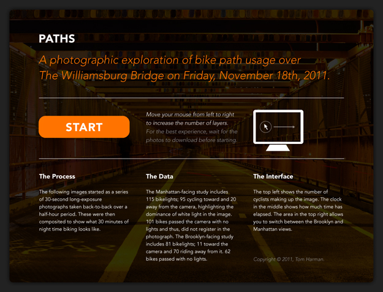
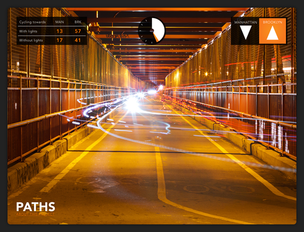

MFA IXD
Paths
A photographic information visualisation exploring how New Yorkers use bike lanes when cycling over the Williamsburg Bridge.
The project began with a series of 30-second long-exposure photographs, which were turned into an interface allowing users to see what half an hour of bike traffic looked like.
This individual project was conducted as part of Jason Santa Maria‘s Craft & Communication brief to explore Interactions with the City.